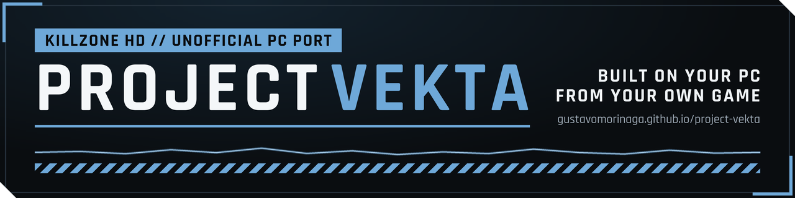

Killzone HD: Unofficial PC Port (static recompilation)

A native Linux and Windows x64 port of the 2011 PS3 remaster of the first Killzone, made by static recompilation: the game's PowerPC and SPU code is translated to C++ ahead of time and compiled into a PC program on your machine; graphics go through Vulkan. No emulator runs at play time.
Status: Playable
You need your own copy of the game. This project ships no game code, data, assets or keys.
2026.11.23Comparison: native and FSR 3 Quality The same view zoomed, native 1920x1080 with MLAA on the left and FSR 3 Quality from 1280x720 on the right.
2026.10.30Campaign: character selection The campaign's character selection.
Screenshots of the port running the developer's own copy of the game, kept to document progress; the game content in them belongs to Sony Interactive Entertainment and Guerrilla Games. Every screenshot, by date: SCREENSHOTS.md.
Status
Status: Playable. 19 game features and 26 PC features, from the project's records.
Status: Playable
generated from the project's records · checked 2026-10-30 · 19 game features · 26 PC features
The same data as FEATURES.md, where every row has its evidence. Works is claimed only with a recorded result, on the maintainer's machine (Linux x64, RTX 3070 Ti) unless a row says otherwise.
OK
Boot and menusevery run since 2026-10-14
Works
OK
Level 1played by hand from start to end
Works
OK
Levels 2 to 112026-10-17 (all 11 loaded 22 times without a hang), parts played by hand 2026-10-20; all played from start to end on Linux and on Windows (the maintainer, reported 2026-11-16)
Works
OK
Movies30 movies; runs without FFmpeg skip them
Works
OK
SavesContinue returns to the checkpoint
Works
OK
Sounddecoded by minimp3 in place of the firmware's decoder, checked against it (2026-11-18, docs/dev/flashmp3-native.md)
Works
WIP
Trophiesunlocked and logged locally with names, grades and platinum, with an on-screen notice and its sound (the port's own) and a Trophies page in the pause menu
Partial
OK
Linux buildbuilt and played on the maintainer's machine; BUILDING.md
Works
OK
Windowsruns under Wine, Proton and on Windows; the whole campaign played there
Works
OK
Frame ratea steady 60 fps by default; the 144 Hz mode at about 131 to 134 fps
Works
OK
Installertools/install.sh on Linux; on Windows a release folder (tools/release/assemble_payload.py, Project Vekta.exe) builds with the bundled toolchain, and a setup program installs it; both are built and published with each release since 0.2.0, and the Linux folder since 0.3.0
Works
The PS3 game, feature by feature
Works16
Partial1
Not yet1
Not applicable1
Boot and menus
Boot and menus: the PS3 game feature by feature
Feature
On the PS3
In the port
State
Logos, opening movie, front end, options, pause menu
as shipped
Works
Campaign
Campaign: the PS3 game feature by feature
Feature
On the PS3
In the port
State
Level 1
first level
Works
Levels 2 to 11
the rest of the campaign
on Linux and on Windows
Works
Cutscene and level movies
AVI movies through cellSail
(FFmpeg)
Works
Game logic timing
30 Hz
at 30 and 60 Hz; 144 Hz with one known problem (KNOWN_ISSUES.md)
Works
Saves
Saves: the PS3 game feature by feature
Feature
On the PS3
In the port
State
Profile, checkpoints, Continue
one profile save
Continue returns to the checkpoint
Works
Controls
Controls: the PS3 game feature by feature
Feature
On the PS3
In the port
State
DualShock 3 layout
pad
with any SDL controller
Works
Rumble
pad vibration
Works
Controller options (sensitivity, invert)
Pause > Controls
Works
Graphics
Graphics: the PS3 game feature by feature
Feature
On the PS3
In the port
State
1280x720 picture
720p
at any window size
Works
Anti-aliasing (MLAA on the SPUs)
jm_post job chain
the game's own MLAA reimplemented as a GPU pass, equal to the SPU code except at about 0.6 % of edge pixels (KZ_MLAA=gpu, default; spu runs the original jobs, slowly; off). ENHANCEMENT since patch 2080: also at the size the port draws the frame (internal scale, fill to the window); before, only at 1280x720, and the glow and sprint motion blur dropped with it. Level 8 (user_1023 save), 2026-11-14: 8 frames each at 2560x1440 and 3440x1440, the GPU output equals mlaa_ref_wh on every pixel (PS3RECOMP_MLAA_DUMP_NATIVE); at 1280x720 the output still equals mlaa_ref
Works
Glow and motion blur (jm_post)
event-driven SPU jobs
on the GPU; the glow (emissive sprites, Level 11 docking bay measured) and the sprint blur equal the SPU chain on every pixel in the game
Works
HUD, menus, fonts
as shipped
Works
Sound
Sound: the PS3 game feature by feature
Feature
On the PS3
In the port
State
Music, effects, dialogue
MultiStream on the SPUs, MP3 streams
Works
Surround
the console's output setting
stereo, 5.1, 7.1
Works
Languages
Languages: the PS3 game feature by feature
Feature
On the PS3
In the port
State
Voice, subtitles, menus
English, French, Spanish (by console language)
chosen on the PC page
Works
Trophies
Trophies: the PS3 game feature by feature
Feature
On the PS3
In the port
State
Trophy unlocks
PSN trophies
unlocked and logged locally with names, grades and platinum, with an on-screen notice and its sound (the port's own) and a Trophies page in the pause menu
Partial
Multiplayer
Multiplayer: the PS3 game feature by feature
Feature
On the PS3
In the port
State
"One / Two Player" in the menu
local
checked
Not yet
Online
Online: the PS3 game feature by feature
Feature
On the PS3
In the port
State
PSN
sign-in, trophies sync
Not applicable
What the port adds
26 PC features available now, on a PC page inside the game's own Options and Pause menus. Changes to how the game plays stay optional.
resolution, refresh; resizable window, aspect kept; a new size or display mode is drawn at its full detail at once (ps3recomp patch 2093; Level 1, 2026-11-26)
Internal resolution scale, 50 % to 200 %
100 %
scale; applies at once, with FSR 3.1 too (ps3recomp patch 2093; Level 1, 2026-11-26; DLSS takes the same path, not yet run)
V-Sync on, off, adaptive; VRR
on
vsync
NVIDIA Reflex: off, on, on + boost (VK_NV_low_latency2)
off
reflex; "not available" without the extension; no measured fps or latency change in Level 7
Frame-rate limit 30, 60, 120, 144, 165, 240 or Unlimited (the game clock follows)
60
fps_limit (0 = Unlimited, a 1000 Hz game clock); 30 is the PS3's; 120 and up are EXPERIMENTAL: the frame rate is the PC's below the limit, with the 144 Hz mode's known problems (KNOWN_ISSUES.md)
AMD FSR 1 upscaling and RCAS sharpening
bilinear
upscaler, sharpness
Anisotropic filtering: the game's own, off, 2x to 16x
the game's
anisotropic; applies at once (ps3recomp patch 2095; Level 1, 2026-11-26)
Post-processing: anti-aliasing (the game's MLAA) on or off; motion blur, film grain and glow 0 to 100 % in steps of 10
the game's
antialiasing, motion_blur, film_grain, glow, applied at once; 100 % leaves the game's value untouched. Level 8 (user_1023 save), 60 Hz, 2026-11-13, scripted sprint with PS3RECOMP_MLAA_DUMP: at 100 % the sprint field rises 12, 23 ... 94 over 8 frames and the output equals the C reference on every pixel; at 50 % the field is exactly half (6, 12 ... 47), output again equal to the reference; at 0 % the game's factor (0.05) is drawn as 0 and no frame has field strength; anti-aliasing off: output = input on 8 frames. Film grain (alpha 0.12 in Level 8, always on): 0 % vs 100 % frames differ by grain only (high-frequency energy 2.35 vs 2.61, 4 luma darker with grain); glow (Level 8, lit sprite glow, 8 frames with 13-696 lit source pixels): at 100 % every output equals the C reference at the game's strength 256 (the glow branch's check_dump.sh), at 0 % every output equals the reference without glow, about 8000 pixels apart from the 100 % one. 2026-11-16, Linux, 2560x1440 (internal 2x), 14 phases of chapters 1 to 9 opened from the level select or a save: the MLAA, glow and motion-blur passes ran on every frame (a counter per 5 s); in 1.HQGrounds the game itself fades its film grain from 0.15 to 0 in about 30 s, so the slider has nothing to scale (the same in RPCS3, checked by the maintainer); the glow source was unlit in all 14, as the game draws it only in some Level 11 spots. Windows, 3440x1440, 2026-11-16 (maintainer): MLAA and sprint blur on
Temporal upscaling: AMD FSR 3.1, NVIDIA DLSS Super Resolution and DLAA
off
temporal: FSR 3.1 on, off or another mode at once, also on a game started without it (ps3recomp patch 2096; Level 1, 2026-11-26), DLSS at the next start unless the game started with it; DLSS only when downloaded at install with NVIDIA's licence accepted, else "(not built)"; Level 7, 2560x1440 Quality, 2026-11-05: Linux DLSS 122.2 fps, FSR 3.1 123.7 fps; Windows exe under GE-Proton 11 DLSS 105.2, FSR 3.1 104.7 (native 108.6), under Wine FSR 3.1 105.8; real Windows (RTX 3070 Ti, maintainer's private build) DLSS Quality 135.7 fps
Any aspect ratio: Hor+ for 21:9, 32:9 and wider, the game's own 4:3 view for 4:3 and 16:10, menus and movies kept 16:9
on
widescreen, aspect (auto or a forced 4:3, 16:10, 16:9, 21:9, 32:9; both at once since ps3recomp patch 2094, Level 1, 2026-11-26); below 16:9 the world's FOV is the game's own 4:3 rule, 100 / aspect vertical (func_00211540: 75 vertical, 91.3 horizontal at 4:3); Level 1, 2026-11-12/13: 1440x1080 and 1920x1200 windows fill with the HUD in the corners, round crosshair, weapon as the game frames it; forced 4:3 in a 2560-wide window and forced 16:10 in a 3440-wide one show their box with side bars; pause menu 16:9 with bars; 21:9 unchanged. Windows, 2026-11-16 (maintainer, the 0.5.0 test setup): forced 4:3 and 16:10 show their box with bars, HUD in the box corners, menus and movies inside; auto fills a 21:9 screen
Field of view, 70 to 120 degrees horizontal at 16:9 (the game's is 87), for the world and, apart, the first-person weapon
the game's
field_of_view, weapon_fov (the weapon's game value is 45 degrees vertical, 72 horizontal at 16:9); a scope's zoom keeps its magnification; an older fov (vertical) is carried over; Level 1 at 120, 2026-11-09: the world wider, sky with it, weapon as the game made it; 3440x1440, F12 capture: weapon projection 45 degrees vertical as at 16:9 (was 30.7), weapon_fov 110 gives 63.8
HUD size and position
the game's
hud_size, hud_position
Crosshair size (the weapon crosshair alone, apart from the HUD size)
the game's
crosshair_size
Presets: Original (PS3), Performance, Balanced, Quality
Custom when nothing matches
Keyboard and mouse: direct mouse look with its own sensitivity and invert, mouse in menus and dialogs
on
mouse_yaw, mouse_pitch, mouse_invert; keys in kz1hd_keys.ini (written on the first run; edit to remap); Windows, 2026-11-16 (maintainer): a real mouse in the PC page (click and hold, sliders), the menus, VICTORY and play
Controllers through SDL, with keyboard and mouse at the same time
merged
controllers; PAD_MOUSE_STICK=1 puts the mouse on the right stick instead
Button prompts and the Controls picture follow the device (keyboard and mouse, Xbox, PlayStation, Nintendo)
auto
Sound output: stereo, 5.1, 7.1
stereo
speakers
Language: system, English (US, UK), French, Spanish
system
language
Skip the opening movie (the logos stay)
off
intro = off, KZ_SKIP_INTRO=1
Statistics overlay (MangoHUD, Linux)
off
overlay = mangohud, KZ_MANGOHUD=1
Quit Game in the Options sub-menu; closing the window waits for a save in progress
on
The game's own Debug Options in the pause menu (God Mode, Next Level, ...)
off
KZ_DEBUG_MENU=1
All 11 levels selectable in the campaign menu
off
KZ_UNLOCK_LEVELS=1
Local trophy log from the game's own trophy set
on
needs TROPDIR in the run folder (tools/setup-vfs.sh)
The port itself
The port itself
Feature
Notes
State
Linux x64 build
Works
Windows x64 exe (cross-built on Linux)
runs under Wine, Proton and on Windows; the whole campaign played there
Works
Frame rate
a steady 60 fps by default; the 144 Hz mode at about 131 to 134 fps
Works
Installer that builds the port on the player's PC
tools/install.sh on Linux; on Windows a release folder (tools/release/assemble_payload.py, Project Vekta.exe) builds with the bundled toolchain, and a setup program installs it; both are built and published with each release since 0.2.0, and the Linux folder since 0.3.0
AddedA notice when you earn a trophy: a card slides in at the top right with the trophy's own picture from your game's trophy set, its name, its grade and how many of the 59 you have, with a short sound made for Project Vekta. Up to three show at once, the others wait their turn, and the ones below slide up when one leaves; the card is slightly see-through. It shows during loading screens, movies and the pause menu too, and with every upscaler. Two new rows on the PC page, "Trophy Notices" and "Trophy Sound" (on by default; the sound row is greyed out while notices are off). No notice when trophies are not stored (debug options or scripted input). The words on the card follow the game's language (English, French, Spanish, German, Italian, Dutch).
AddedA Trophies page in the pause menu: all 59 trophies in the trophy set's order with their grade, name, and the day you earned each one or "Locked", the selected trophy's description under the list, and how many you have, with a progress bar, at the top right. Pad, keyboard and mouse work as on the PC page; names and words follow the game's language.
AddedMore frame-rate limits on the PC page and in RecompLauncher: 120, 165, 240 and Unlimited (fps_limit = 0, a 1000 Hz game clock), besides 30, 60 and 144. Experimental, for fast PCs and high-refresh monitors; 60 stays the default (docs/KNOWN_ISSUES.md).
AddedRecompLauncher: the game's page lists the PC settings (display, picture, upscaling, mouse, sound and language), read from and written to kz1hd_pc.ini, greyed out where the game's PC page greys them; and a PlayStation Store package or a decrypted EBOOT.elf that matches the US copy is shown as verified.
AddedRecompLauncher: the game box also takes the European edition, the folder RPCS3 installed it in (NPEA00418) or your European disc copied to the PC (BCES-01743), and a decrypted EBOOT.elf of the European edition is shown as verified. The release notes name the European edition too.
AddedThe European edition of Killzone HD (NPEA00418, from the European PlayStation Store): the build finds it in the game folder, lifts it with its own addresses and plays it in the language the system asks for (its archive has English, French, German, Italian, Spanish and Dutch), with its saves in their own folder. Install it in your RPCS3 with its licence and choose "Use my RPCS3 install".
AddedThe European disc of Killzone HD (BCES-01743): give a copy of the disc's folder to --disc FOLDER (or "From my Killzone Trilogy disc" in the setup). Its files are the European edition's; the official RPCS3 only decrypts a copy of its EBOOT.BIN, and the archive is read where it is (docs/GETTING-FILES.md).
AddedTwo players on one PC (Game > Battlefields > Two Players, split screen): "Two Players" is now enabled with a single controller, whatever the Controllers setting. With one controller, player 1 plays on the keyboard and mouse and player 2 on the controller; with two or more, the first controller and the keyboard and mouse are player 1 and the second controller is player 2. The mouse turns only player 1's view (it used to turn both), and player 1's rumble no longer shakes player 2's controller. Each view's HUD follows the HUD Size and HUD Position settings in its own half of the screen, on a 16:9 display and a wider one, and is one player's HUD at half its size: the health and ammo panels keep their shape (the PS3 game squashes them in split screen), the ammo count sits centred on its bar, and the HUD's text (timer, scores, ammo count, prompts) keeps its shape too. Player 2's HUD has the same margins as player 1's (the PS3 game draws it 20 pixels higher, so its timer and scores touched the split line). With FSR 3 or DLSS on (Temporal), split screen shows both views: the temporal upscaler rests while two players play, and the scene is drawn at the upscaler's render size and stretched to the screen as with a lower Resolution Scale (patch 2092). One-player games are unchanged.
AddedReporting a crash (#129): when the game closes unexpectedly (a crash, a hang, a lost GPU, killed, an error code; not when you quit), the launcher says what the exit code means and shows the crash signature, and offers to make the support package; after it, to open the bug report form on GitHub with the version, system and signature filled in (only on a yes; the zip is never uploaded). A session that never ended (power loss) is named at the next start. work/play.log now ends with [launcher] session ended: exit <code> (<meaning>) after <N> s, <kind>, and work/logs/sessions.jsonl keeps one line per session.
AddedThe support package also holds the earlier game logs, sessions.jsonl, the game's crash and hang reports with the names of its functions (from your own build's symbol table), Windows' error reports for the game and its display driver events of the last 24 hours (on Linux the kernel log's GPU lines), what the game's log says about the PC, and a line of your own when you make it in a terminal. scripts/support.cmd and scripts/support.sh make it in the Windows zip and the Linux folder, as the setup's Start menu entry does; RecompLauncher gets a "Crash reports" folder button.
AddedWhen the game crashes, its log now says where: a [kz-crash] block with the exception, the faulting module and offset, the thread, the uptime, the registers, up to 32 frames and a signature (KZ-XXXX-XXXX) that is the same each time the same crash happens, and a copy in work/crash/crash-*.txt. Before, a crash like the ones a few seconds into Level 1 on AMD GPUs (#129) left nothing in the log (docs/dev/crash-reports.md).
AddedWhen the game stops showing new frames for 5 s (and again at 30 s) while its window is not minimized, the log gets a [kz-hang] block with every thread's stack, and a copy in work/crash/hang-*.txt; the game is left running. KZ_HANG_WATCH=0 turns this off.
AddedThe log starts with the system it runs on: [kz-sys] lines for the system, CPU, cores, memory, monitors, the settings in kz1hd_pc.ini, the KZ_* and PS3* variables set (your home folder written as ~), what started the game and whether the build has DLSS.
AddedKZ_CRASH_TEST=<kind> makes the game crash or hang on purpose, to check the reports on a build.
AddedThe game straight from the Killzone Trilogy disc, with no RPCS3 installed: --disc FOLDER (the copied disc, or its PS3_EXTRA package) on Project Vekta.exe, ./project-vekta and the prepare scripts downloads the official RPCS3 at a pinned version (checked by SHA-256), which installs the package into the port's work folder with no window and decrypts a copy of the EBOOT there; the disc is only read and an RPCS3 of yours is not touched (docs/INSTALL.md). The setup's "Your game" page offers it as "From my Killzone Trilogy disc", and recomplauncher.json as a disc field beside the game folder. On Windows 10, 7-Zip unpacks the RPCS3 download. The PlayStation Store package still goes through "Use my RPCS3 install".
AddedEach release file comes with a build provenance attestation: a statement, signed through Sigstore and kept by GitHub, that the repository's release workflow built that very file from the tagged commit. gh attestation verify <file> --repo gustavomorinaga/project-vekta checks a download against it (docs/INSTALL.md).
Added"Get it on" badges for RecompLauncher and Quiver Launcher in the README, the install page and the project page, linking to the port's page on each. The RecompLauncher badge is the one from its press kit, unchanged; the Quiver badge is text only, since Quiver has no press kit and its logo is a mark. The project page's install box also lost its outdated lines: it lists the setup program and the release folders, and what goes online.
AddedKZ1HD.exe carries a version: Explorer's Details tab shows Project Vekta and the release, and KZ1HD --version (Windows and Linux) prints it with the patch set and the ps3recomp commit it was built from. The same line opens every log, so a log says which build wrote it.
AddedKZ1HD.exe has a Windows manifest: it declares Windows 10/11 and the per-monitor DPI awareness the game already asked for at run time.
AddedOne program to start in each release folder: Project Vekta.exe on Windows and the new project-vekta on Linux. With no arguments it plays, and before the first build it checks your files and builds first, asking nothing when RPCS3 and the game are in their usual places. It takes --game, --eboot, --psarc, --rpcs3 [DIR] (or KZ_GAME, KZ_EBOOT, KZ_PSARC), kept in work/paths.env, and --prepare, which checks and builds with no window or question and prints progress lines for a launcher. Each failure has its own exit code and fix text, one table for the game and the launcher (port/kz1hd/kz_exit.h, listed in docs/BUILDING.md). A missing Vulkan driver is named before the game starts.
Addedrecomplauncher.json at the top of the Windows and Linux folders, for launchers that read it (RecompLauncher): it names the game folder to ask for, the optional decrypted EBOOT.elf, the build step with its NVIDIA DLSS tick, the program to start, the saves, the logs and the exit codes. It is made from one source with the version stamped (tools/release/recomplauncher.py) and checked against a schema in the repository.
Addeddocs/TROUBLESHOOTING.md: what you see, what to do and what to attach, for each exit code; docs/INSTALL.md has a section on installing through a game launcher, and docs/dev/launchers.md the contract for launcher developers. CONTRIBUTORS.md lists who helped.
AddedA CPU that is too old is named instead of crashing. The game is built for x86-64-v3 (AVX2, FMA, BMI2: Intel Haswell or AMD Excavator and later). On an older CPU it used to stop at once with an illegal-instruction crash. Now the game says which level it needs and which one the CPU has (a message box on Windows, the launcher's message, the log), and exits with code 75. The first run's check and the Windows setup's first page ask the same before the build: the first run stops there, and the setup asks whether to install anyway.
AddedThe game checks that its EBOOT.elf is the one the build was made from (by size and SHA-256, in tens of milliseconds) before it starts. With another one (another version of the game, a file replaced after the build), it says so instead of running code that does not match, opens no window and exits with code 76; the launcher offers to rebuild. KZ_EBOOT_CHECK=0 skips it.
The release page has the Windows setup program (project-vekta-0.7.0-setup.exe, the easiest way on Windows), the Windows folder as a zip, the Linux folder and the source archive, each with a .sha256 file, and SHA256SUMS: check your download against them.
The Windows setup program, Project Vekta.exe in the Windows zip and ./project-vekta in the Linux folder check your own Killzone HD files (a disc or PlayStation Store copy, or the one your RPCS3 already installed), translate the game's code and build it on your machine. Nothing of the game is shipped or downloaded, and nothing is written into your game files. What each input must contain: Getting your files.
Through a launcher
The launchers install the Windows zip or the Linux folder and build the same way: installing through a launcher. They are third-party projects; their names are their owners' marks.
Or build from source
git clone --recurse-submodules \
https://github.com/gustavomorinaga/project-vekta
cd project-vekta
tools/install.sh
Nothing unless you choose it. The port, the setup and the build make no network connection of their own. The downloads are the ones you start (the release, or this repository and its ps3recomp submodule, the build tools) and two you opt into: NVIDIA DLSS, fetched from NVIDIA only if you accept its licence, and the new-version check, off by default. The whole list: What goes online; where saves and settings go: Where your data goes.
This site loads nothing from other servers: its font, images and script come from this site, and it sets no cookies, stores nothing in your browser and keeps no statistics. It is hosted on GitHub Pages, which, like any web host, receives your visit (GitHub's privacy statement applies).
Requirements
What you need from your own copy, and the PC it was tested on.
What you need
Your own Killzone HD (NPUA80856, or the European NPEA00418) from the Killzone Trilogy disc or the PlayStation Store, installed, with its decrypted EBOOT (no PS3 system software is needed): GETTING-FILES.md. No PlayStation Network account is used.
Hardware to play
The PC: what it was tested on, and the minimum
Item
Minimum
Tested
Operating system
Linux x64; Windows x64 (other Windows versions and machines not tried)
CachyOS (Linux x64); the maintainer's Windows install for the cross-built exe; Wine and Proton (GE-Proton 11, proton-cachyos)
CPU
x86-64 with AVX2 (x86-64-v3, Intel Haswell or AMD Zen and newer), the default build target; KZ_MARCH="" builds for any x86-64, untested
the maintainer's desktop CPU with AVX-512 (KZ_MARCH=x86-64-v4)
GPU
a Vulkan GPU and driver; NVIDIA DLSS needs an NVIDIA RTX GPU, AMD FSR 3.1 runs on any; a tester's AMD Radeon 8060S on Windows runs it with open problems (KNOWN_ISSUES.md, issues #17 and #18), other GPUs not tried yet
NVIDIA GeForce RTX 3070 Ti, driver 615
Memory
building: several GB for the lifted code (use fewer jobs on small machines); playing: not measured
Disk
about 4 GB for your game files, plus, free: Windows about 2.4 GB (the release folder 0.75 GB, then the build: lifted code 0.13 GB, work\build-win 0.38 GB, work\win-deps 0.20 GB, the game folder work\vfs with the movies taken out of the archive 0.92 GB), and about 3.2 GB more where Windows cannot make links, for copies of the EBOOT and the archive (the setup program reserves 5.8 GB); Linux about 1.9 GB (the folder 0.57 GB, lifted code 0.13 GB, work/build 0.26 GB, work/vfs 0.92 GB; the EBOOT and the archive are linked)
measured 2026-11-14 on the maintainer's machine (main at 698c28c), and the v0.4.0 downloads unpacked
Details: requirements.md. The tested column is the maintainer's machine; reports from other hardware are welcome.
FAQ
14 short answers: the emulator question, your own copy, Linux, launchers, speed and more.
Is this an emulator?
No. The game's PPU and SPU code is translated to C++ ahead of time with ps3recomp and compiled into a native Linux or Windows x64 program. No CPU emulator runs while you play. Around the game's own code, the PS3's system libraries are reimplemented on PC APIs, and its graphics commands are replayed on Vulkan. More: HOW-IT-WORKS.md.
Is it a remake or a rewrite?
No. The game's logic is the game's own code. The PC options (resolution, aspect ratio, upscaling, mouse look and the rest) are added around it and are all optional; anything that would change gameplay is off by default (FEATURES.md).
Do I need the game?
Yes. This repository and its downloads hold no game code, data, assets, keys or firmware, and never will. The port is built on your PC from your own copy of Killzone HD. What each file must be: GETTING-FILES.md.
Which copies work?
Killzone HD, the US edition (NPUA80856), installed from your own Killzone Trilogy disc or bought on the PlayStation Store, and the European edition (NPEA00418) from the European PlayStation Store, through your RPCS3. The European disc (BCES-01743) has not been tried (GETTING-FILES.md).
Do I need PS3 firmware?
No, since 0.6.0. The music is decoded by the port itself, and the SPURS queue that used the firmware's libsre is in the port's runtime (CHANGELOG.md).
Why does it build on my PC?
Because the translated game code is made from your files, it cannot be shipped. The setup program, the release folders and the launchers bring their own build tools and build it once, in 5 to 30 minutes (INSTALL.md). Afterwards the game starts directly.
Do I need RPCS3?
Only for one step, and only if the game is installed there: the setup asks your own RPCS3 to make a decrypted copy of the game's EBOOT (and, for the Store copy, of its data archive). If you already have the decrypted EBOOT.elf, RPCS3 is not needed at all (INSTALL.md).
Does it run on Linux?
Yes, natively: the Linux folder (./project-vekta) or a build from source with tools/install.sh. The Windows program also runs under Wine and Proton, more slowly (STATUS.md).
Can I install it from a game launcher?
Yes: RecompLauncher and Quiver Launcher list the port, and both install the same release folders (INSTALL.md).
How fast does it run?
A steady 60 frames per second by default on the maintainer's machine (the game logic runs at 60 Hz instead of the PS3's 30); an optional 144 Hz mode reaches about 131 to 134 in Level 1 and Level 7 (STATUS.md). Your PC: requirements.md.
Does anything go online?
Nothing unless you choose it: the optional NVIDIA DLSS download and the new-version check, off by default (PRIVACY.md).
Where are my saves and settings?
In the install's work/vfs/, or in %APPDATA%\Project Vekta for a non-portable Windows setup install (PRIVACY.md).
Built on ps3recomp v0.19.0: PPU and SPU code lifted to C++, the RSX command stream replayed on Vulkan.
how it works · ps3recomp v0.19.0 · 181 patches
The port is built on ps3recomp (MIT), pinned at v0.19.0 with 181 patches of this project: the PPU code and the game's SPU programs are lifted to C++, the PS3 system libraries the game calls are reimplemented, and the game's RSX command stream is replayed on Vulkan. It builds natively on Linux, and on Linux for Windows; the Windows build is tested under Wine, Proton and on Windows.
It follows Project Helghast and Project Pyrrhus, the same method applied to Killzone 3 and Killzone 2, and reuses their general runtime work. About 65 % of Killzone HD is done, and 43 % of the whole trilogy plan; what comes next: the roadmap.
The launchers are third-party projects; their names are their owners' marks.
Legal
No game content is distributed. The port's own code is MIT.
Killzone and Killzone HD are trademarks of Sony Interactive Entertainment. This project is not affiliated with or endorsed by Sony Interactive Entertainment or Guerrilla Games; the names are used only to say which game the port runs. "Vekta" is the name of the game's own colony world. No game content is distributed: no disc or PSN files, no decrypted or translated game code, no assets, no firmware and no keys. Players supply their own copy of the game; the game's code is translated and compiled on the player's own machine from their own files.
The port's own code, tools and documentation are MIT. Third-party components and credits: NOTICE.md. Security reports: SECURITY.md. Temporal upscaling: AMD FidelityFX FSR 3.1 (MIT, built in) and NVIDIA DLSS (NVIDIA's, under its own licence; downloaded from NVIDIA on the player's machine only when they accept it, and never distributed here). AMD, FidelityFX, NVIDIA and DLSS are trademarks of their owners.